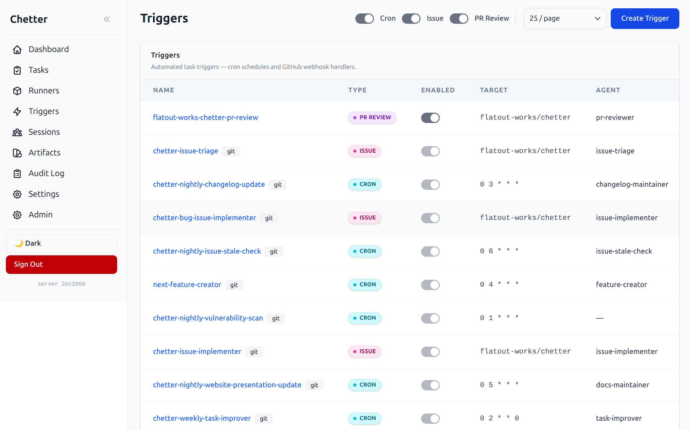
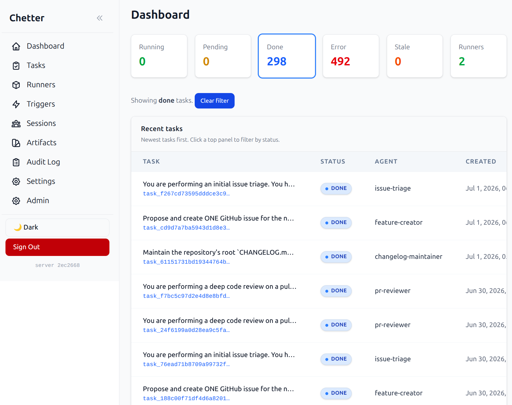

Fleet dashboard
Track task throughput, live status, agents, timing, and runner health from the control plane.
 Open source agent control plane
Open source agent control plane
Chetter coordinates standard agent harnesses, isolated runners, GitHub-native workflows, and a live web control plane for teams that self-host their automation.
Add the coding harness you like — the runner is modular by design.
OpenAI-compatible, Anthropic, AWS Bedrock, and LiteLLM routers — mapped per harness in the model catalog.
Tailor developer containers for different agents and their needs. Secure sandboxing via gVisor, supported by both platforms.
Agents work just like you do: opening PRs, triaging issues, posting reviews — all with auditable artifacts.
What it gives you
Observe task runs, manage automation, and inspect GitHub-native workflows from the same self-hosted control plane.
Track task throughput, live status, agents, timing, and runner health from the control plane.

Manage cron jobs, issue responders, and GitHub PR review workflows from one table.

Inspect each task's full configuration — provider, model, harness, session mode, git ref, skills, and environment — see exactly what triggered it, and extend deadlines on long-running work without leaving the web UI.
Open Source
No hosted Chetter service. Clone the repo, deploy the server and runners, and keep the execution path under your control.
GitHub Native
Wire agents into the tools developers already use, with tracked artifacts and auditable outcomes.
Standard Runners
Use Docker or Kubernetes images with the language tools and harnesses your projects already rely on.
Any Harness
Run the CLI agents your team already trusts. The runner normalizes every harness into the same task events.
Any Model
A data-driven model catalog wires OpenAI-compatible, Anthropic, AWS Bedrock, and LiteLLM endpoints to each harness — no code changes.
Secure by default
Chetter runs agent containers under gVisor (runsc), a userspace kernel that intercepts system calls. Each agent gets an isolated filesystem view, restricted network egress through transparent HTTP and DNS proxies, and no direct access to the host kernel. This means a compromised or misbehaving agent stays inside its container boundary — it cannot reach the runner's credentials, other tasks' workspaces, or the host machine. gVisor works on standard Docker and Kubernetes nodes; no custom AMI or kernel patches are required.
Start with the simple lifecycle, then drill into architecture and operational details.